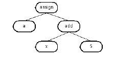

Abstract Syntax Trees
During the parsing phase of source compilation—after preprocessing in the case of C/C++—the syntactic structure of the program emerges. Parts of this structure are decorated with attributes that capture the meaning of the parts: variable references are resolved to their storage areas, the type of objects is defined or clarified, calls to functions are noted, and implicit operations like type conversions or calls to constructors are made explicit. DIScover creates this structure as an abstract syntax tree, and stores this AST for later analysis.
The AST is a highly structured representation of a body of source code. It encapsulates all of the syntactical properties of the source in a format that can be formally manipulated. Each element or node in the tree represents a syntactical component and may have one or more subnodes. Direct descendants of a node are known as children. Children of the same node are known as siblings. An entire program can be described by the AST, starting from such high-level notions as file or function all the way down to such things as integer constant. The following illustrates some equivalent code fragments, and their corresponding AST:
C a = x + 5
Pascal a := x + 5
COBOL add x, 5 giving a
Tcl set a [ expr $x + 5 ]
AST assign(a, add(x , 5))
The preceding AST can be visualized logically as follows:

The AST is stored as a strict tree. A root node is created for each file, and the ASTs for elements defined in those files are created as children of the file’s root node. The root node is called the ast_root.
Note: Although the AST is called an abstract syntax tree, it is not always completely language independent (abstract). There is a number of cases where nodes are added to represent particular facets of a language; these cases are often important to TPM users. In checking coding standards in C, for example, it may be important to be able to distinguish between a then clause that is a single statement and a then clause that is a single statement enclosed in a curly brace block. In this case, the block is captured in the AST, even though its structure without the block is sufficient to understand the action of the program. The ast_root that describes the root of the file is another example of an artifact introduced to assist the TPM developer but that is not important for the action of the program.